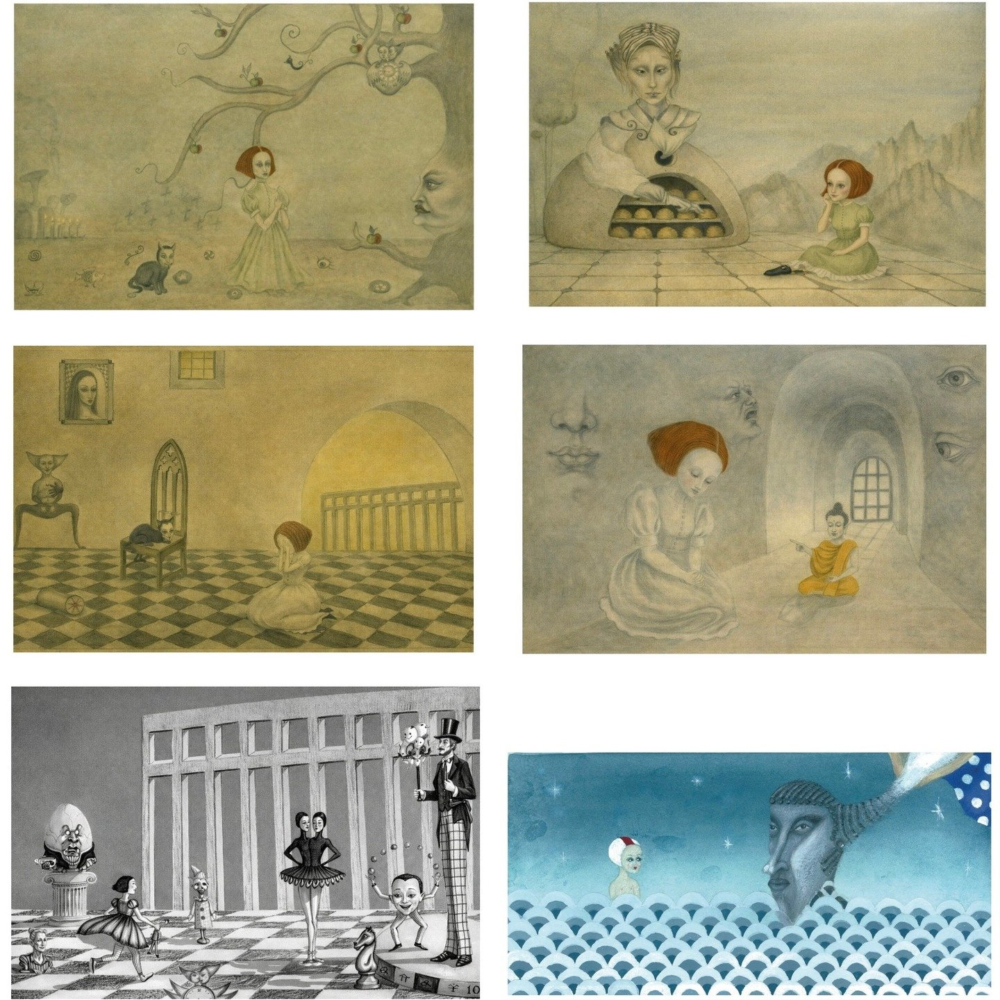
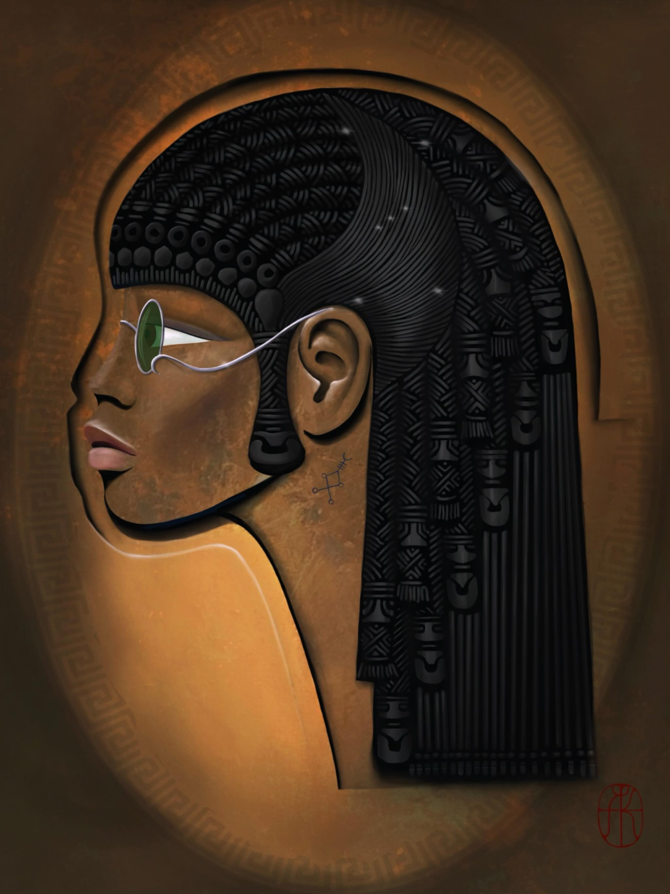
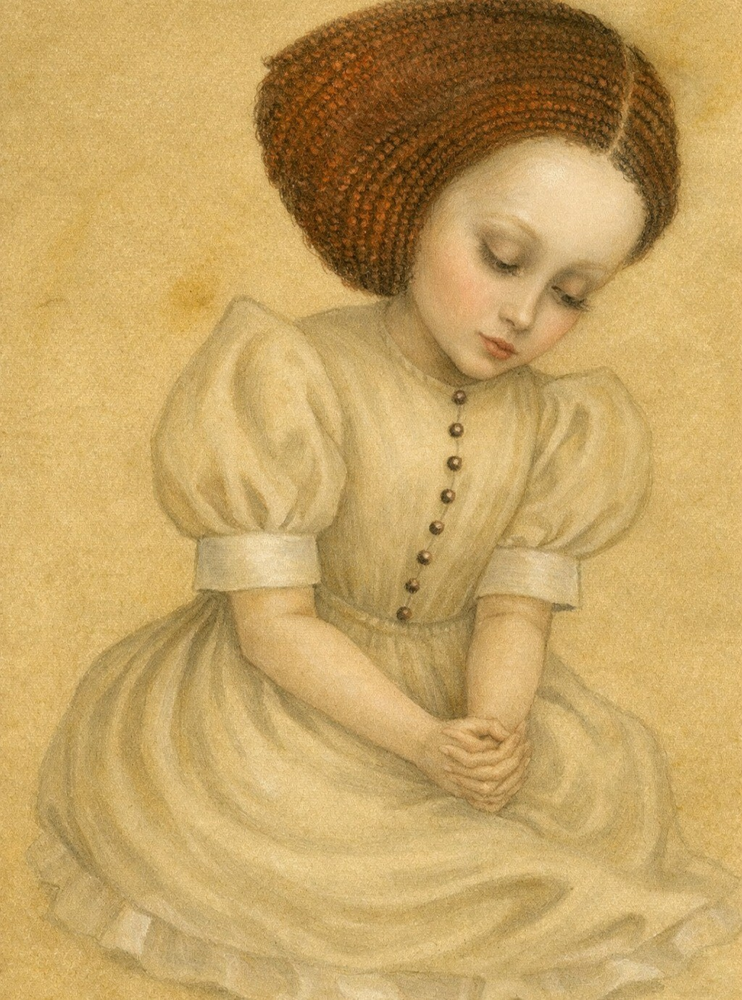
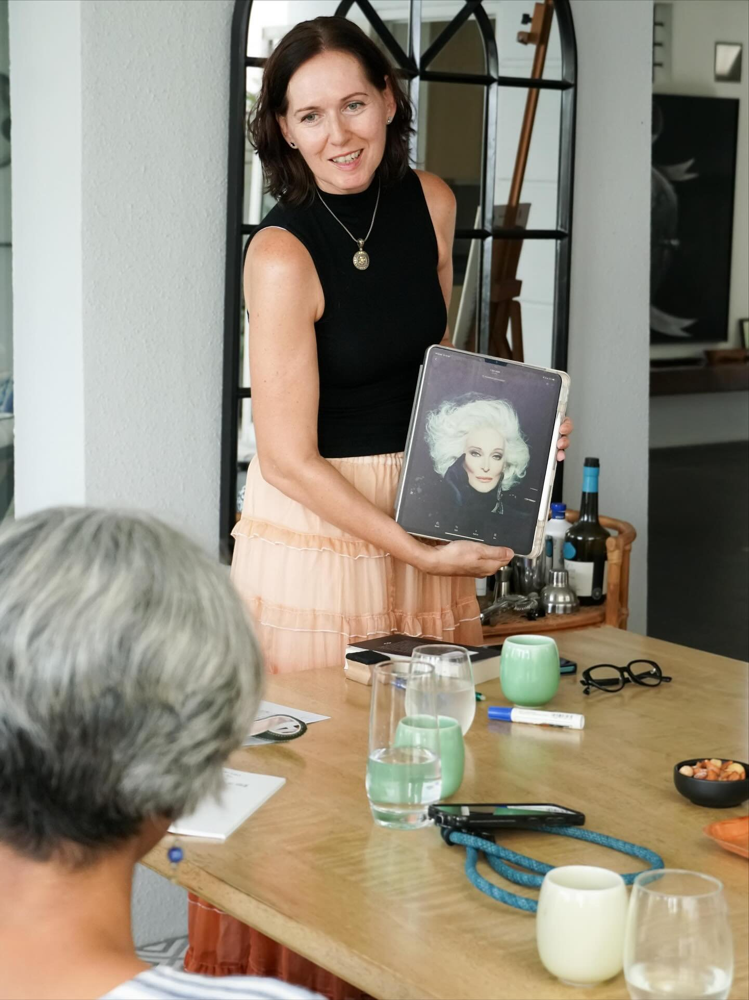

Do you feel that the role you are playing no longer fits, and wonder what role is now calling you?

A guided 1:1 Deep Dive into your Inner Realm
This is a space to reflect, reframe, and reconnect with your inner self. In three sessions, you gain clarity, perspective, and a renewed sense of direction. This offering combines traditional executive and narrative coaching with elements of art therapy and active imagination.
It supports deeper self-understanding, helps unlock untapped potential, and addresses limitations by working with universal archetypal patterns.

Step into your archetype. Live in alignment.
A personalised digital portrait in which you are represented through your dominant archetype. The portrait serves as a visual anchor, an invitation to recognise, embody, and consciously step into an inner pattern that is already present.
Includes a 90-minute archetypal reading session where we explore your dominant inner archetype and the possible conflicts between the different archetypal energies within you.

90-minute deep dive
Sometimes you don't need a full program. You need one focused conversation to cut through the noise. The Clarity Session is a standalone 90-minute session designed for a specific question, decision, or challenge.
You'll leave with a clear perspective, a written summary, and concrete next steps.

Archetypal exploration in a group setting
Interactive workshops drawing on Jungian archetypes, ancient mythology, and creative thinking. These sessions create a reflective space where participants explore the invisible patterns shaping their lives.
Past workshops have explored themes such as the Maiden · Mother · Crone archetypal journey, ageing as a deepening rather than a loss, and how to recognise the archetypal energies at work within us.
“All the world's a stage, and all the men and women merely players.”
William Shakespeare
If you're navigating a deep transition and want sustained, transformative support, the 3-Session Inner Landscape Journey is the best fit. If you're curious about your archetypal makeup, start with a Portrait. For a single pressing question, the Clarity Session gives you focused insight. Not sure? Send me a message and we'll figure it out together.
This work goes deeper than goal-setting and accountability. By combining Jungian depth psychology, narrative coaching, active imagination, and applied semiotics, we access the unconscious patterns that shape your decisions.
Yes. If after a Clarity Session you want to continue with the 3-Session Journey, the session fee will be credited toward the program investment.
No pressure. No obligation. Just an honest conversation about where you are and what might help.
Get in Touch